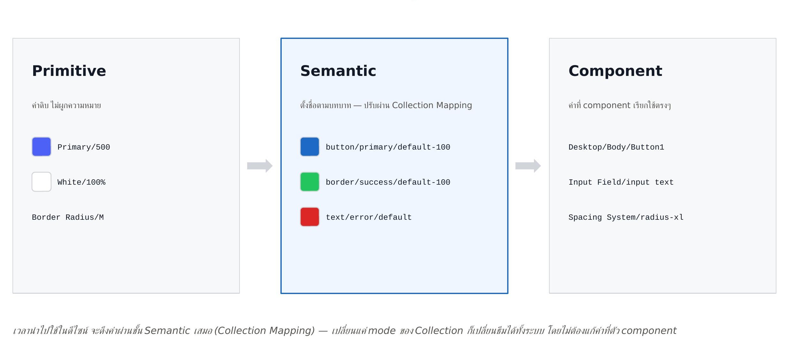
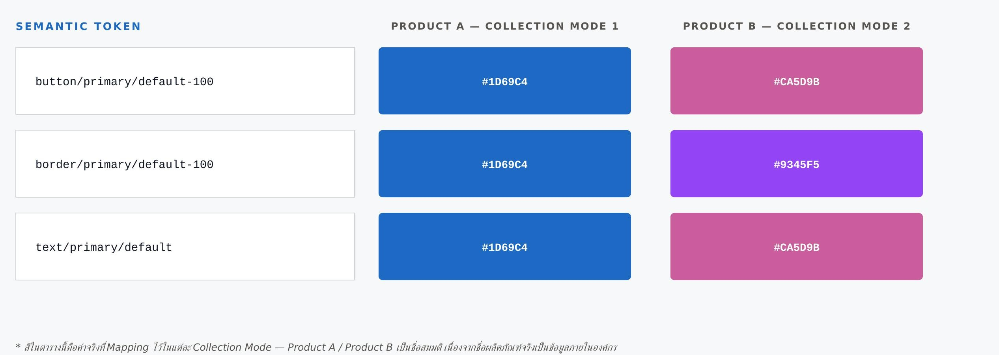
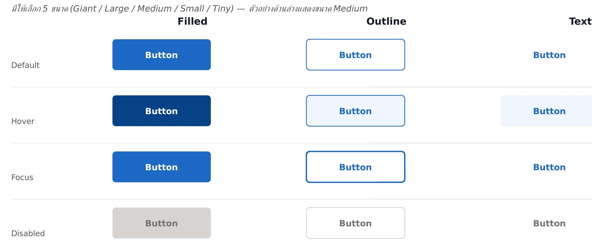
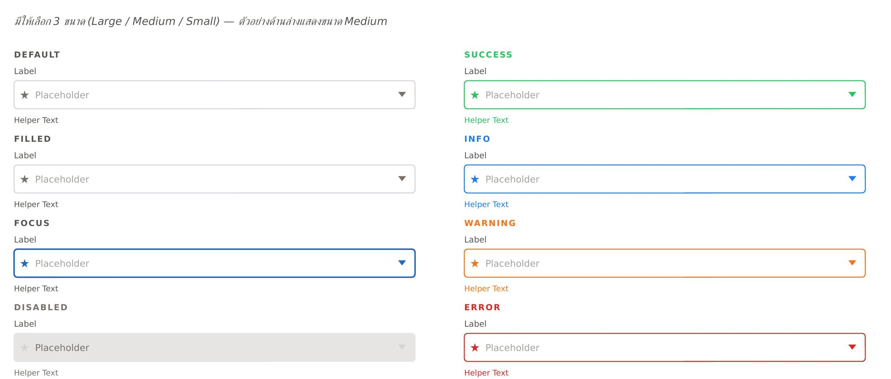
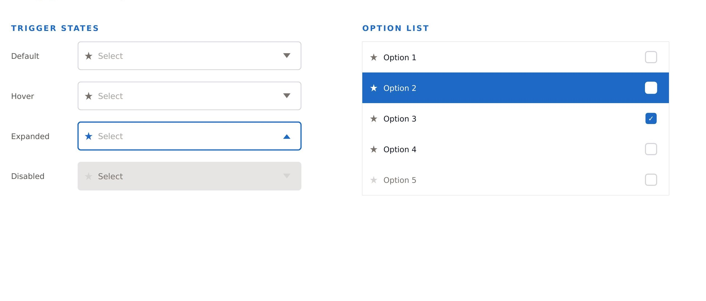

Design System · UX/UI Case Study
One Token Structure, Scalable Across Every Product
Designed a design-token architecture from Primitive through Component level, with a Semantic layer that themes across products via collection mapping — without ever touching the component itself.
This case only shows the token architecture and 3 components designed from scratch — Button, Input, and Dropdown. Every other screen, element, and remaining content from the original Figma file is organizational property and is not shown here.
01 — Project Overview
Reusable design tokens, across every product in the org
This design system started by structuring Figma Variables into a three-layer token system (Primitive → Semantic → Component), grouped into collections. Whenever the design team pulls a color or value into a design, it's always pulled through collection mapping, never referencing the raw value directly — so each product's theme can be swapped at the Semantic layer, without touching the component.
02 — Token Architecture
Three layers: Primitive → Semantic → Component

When used in design, a value is always pulled through the Semantic layer via collection mapping — switching just the collection's mode re-themes the whole system, without editing the value at the component itself.
03 — Supports Multiple Products
Same semantic name, different result per product
The Semantic layer keeps token names fixed (e.g. button/primary/default-100), but the actual value bound to it changes by the collection's mode — so each product can have its own color theme without dev or component code ever changing. Tokens in the same group (fill vs. border, for example) can also map to independently different colors per product.

The colors in this table are the actual values mapped per collection mode — "Product A" / "Product B" are placeholder names, since the real product names are internal information.
04 — Typography
A type scale built on Prompt
Aa กข 123
Component Type Tokens — Desktop/Body/Button (Bold 16px), Desktop/Input Field/Title (Regular 14px), Desktop/Body/Body (Regular 14px), Desktop/Body/Caption (Regular 12px), and more, all set in Prompt.
05 — Component: Button
Filled · Outline · Text — 3 styles, 4 states
Comes in 5 sizes (Giant / Large / Medium / Small / Tiny) — shown below at Medium.

06 — Component: Input
Label · Placeholder · Helper Text — 8 states
Comes in 3 sizes (Large / Medium / Small) — shown below at Medium.

07 — Component: Dropdown
Trigger + Option List

08 — Results
From design files to a system that actually scales
01
Built the token architecture from scratch
Structured Variables into 3 layers (Primitive → Semantic → Component) and grouped them into collections the team can pull from consistently, system-wide.
02
Multi-product support via semantic theming
Token names stay fixed, but switching a collection's mode re-themes an entire product, without editing components one by one.
03
Consistency standard & faster dev handoff
Reduced UI inconsistency between screens, and let the dev team use the same token names as design immediately, cutting back-and-forth revisions.
Want to talk Design Systems?
Open to design-system and token-architecture work that needs to scale across products — feel free to reach out.